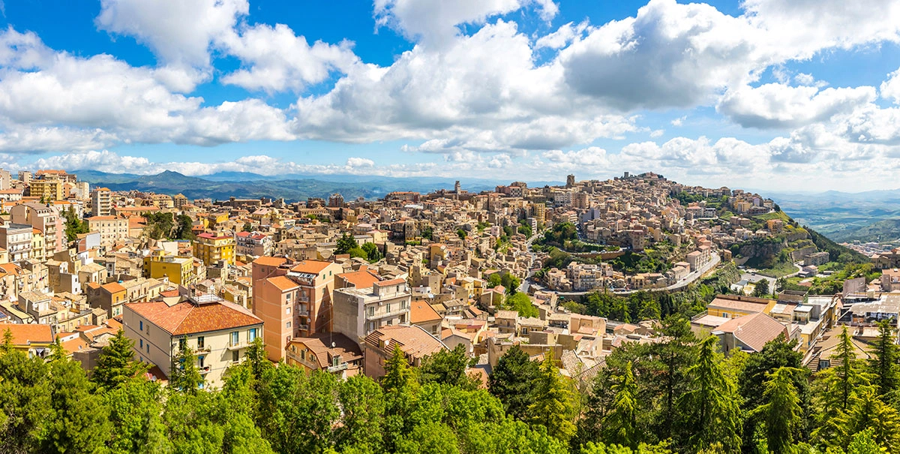

Palermo


Enna è la città più alta della Sicilia, arroccata a 931 metri sul livello del mare al centro esatto dell'isola. Soprannominata 'l'ombelico della Sicilia', offre panorami a 360° su tutta l'isola e custodisce una storia millenaria legata al mito di Demetra e Persefone.
Piazza del Duomo è il centro storico e spirituale di Enna, dominata dall'imponente Cattedrale gotico-barocca e affiancata dal Museo Alessi. Da qui si aprono scorci sulla valle e sul paesaggio circostante, mentre il ritmo di vita lento e autentico della città si manifesta in ogni momento della giornata.

Un imponente tempio che mescola architettura gotica e decorazioni barocche. Costruito e ricostruito nei secoli, spicca per la maestosità delle sue colonne interne in basalto nero e per i preziosi soffitti lignei.
Piazza Duomo, 94100 Enna EN
Situato nei locali attigui alla Cattedrale, ospita un'importante collezione di arte sacra. Il suo pezzo forte è il Tesoro del Duomo, una straordinaria raccolta di oreficeria siciliana ricca di smalti e pietre preziose.
Via Roma, 441, 94100 Enna EN


Un piccolo ed elegante teatro all'italiana, considerato un vero gioiello ottocentesco. Nonostante le dimensioni raccolte, vanta un'ottima acustica e ospita regolarmente spettacoli di prosa e concerti musicali.
Piazza Umberto I, 94100 Enna EN
Grazie alla sua posizione elevata al centro della Sicilia, Enna offre terrazze panoramiche uniche. Da qui lo sguardo spazia per decine di chilometri, dominando vallate, laghi e l'intera catena montuosa circostante.
Piazza Francesco Crispi, 94100 Enna EN